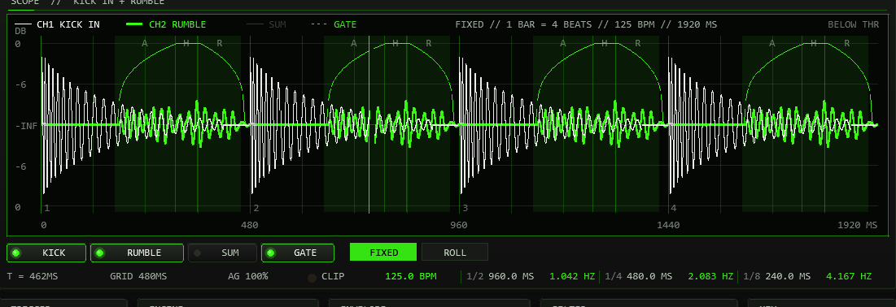
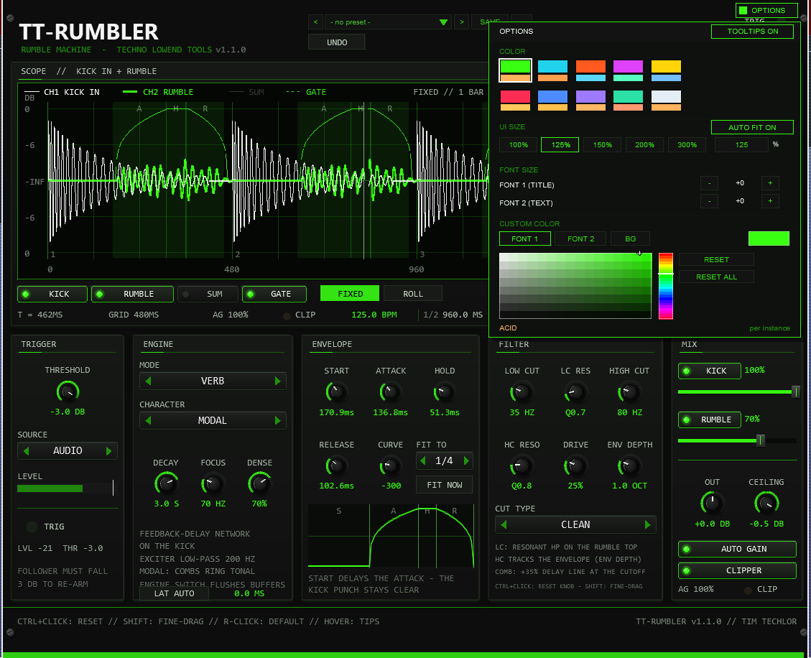

01The concept
The rumble is the rolling sub-bass carpet that carries a modern techno track — classically built by copying the kick, running the copy through a long dark reverb, gating it with an envelope that re-fires on every hit, low-passing it hard and ducking it against the dry kick. TT-RUMBLER packs that whole chain into a single plug-in with every stage on the front: a trigger detector that listens to the kick, three rumble engines (VERB / NOISE / PITCH), a tempo-synced AHDR envelope with independent START, ATTACK, HOLD and RELEASE times in milliseconds, a resonant filter block with an envelope-driven high cut, and a mix stage with feed-forward auto gain and a clipper.
It is an effect, not an instrument: it processes the audio that reaches it — put a kick in front of it (TT-KICK is the obvious partner, but any kick source works) and it does the rest. The engines run on the mono mid signal and the rumble is duplicated to L/R — an authentic mono sub — while the dry kick passes through in stereo, scaled by the KICK fader (delayed by the reported engine latency since 0.9.2, see LATENCY below). The third engine, PITCH, is the feature no dedicated rumble tool offers: it drops the kick itself by up to two octaves, so the rumble is literally built out of your own kick's body.
All 28 sound parameters live on one 900 × 700 panel — no tabs, no menus. Since 0.7.0 the scope is the centre piece: it draws the incoming kick and the rumble together on one bar, so you see the swell against the kick while you turn the knobs. Underneath the controls sit in five groups — TRIGGER, ENGINE, ENVELOPE (with a curve preview), FILTER and MIX. The header carries the trigger LED, up to 19 UNDO steps, the preset bar (INIT + 22 factory designs and a 32-slot user bank) and the OPTIONS button (colours, UI size, font sizes and the tooltip switch).
02Sound examples
The same TT-KICK 909 TIGHT kick at 130 BPM, through the sound of the factory bank: the dry reference plus six presets, each as kick + rumble and rumble only. Each clip contains two bars plus the tail. Use the engine filters to shorten the list, or click the waveform to jump to a beat.
The named factory presets are the starting points. For these comparisons, THRESHOLD is set to −15 dBFS, KICK to 100% and OUT to 0 dB. The kick enters at −6 dBFS peak. All clips share one export gain; there is no individual loudness normalisation, added effect or mastering. The solo clips isolate the rumble through the same output clipper. Headphones or speakers that reproduce the low bass help with the darker examples.
TT-KICK 909 TIGHT, no rumble
03Quick start
- Insert
TT-RUMBLERon the kick track right after the kick source in the FX chain (e.g. after TT-KICK) — it needs the kick's audio on its input. - Set THRESHOLD (default −3 dBFS — the input follower, i.e. the LEVEL bar, must reach it, see section 05) so the TRIG LED blinks
once per kick hit — the LEVEL bar shows the follower against the
white threshold mark; the scope status in its top right corner reads
ABOVE THRwhile the follower is over the threshold. - Watch the scope (section 10): the white KICK IN trace should show every hit, and the accent-coloured RUMBLE trace should swell inside the green gate bands.
- Push the RUMBLE fader up (≈70 %), start with START at 170.9 ms — the rumble swells after the kick punch instead of covering it.
- Pick an engine: VERB for the classic room rumble, NOISE for a textured bed, PITCH to drop the kick's own body into the sub.
- Leave AUTO GAIN on (it holds the rumble ≈6 dB under the kick) and park HIGH CUT in the 40–120 Hz sweet spot.
MIDI the audio trigger is off — feed notes or switch back to
AUDIO.04Signal flow
+---------------------------------------------------+
IN (kick audio from | TRIGGER — peak follower 0.5 ms / 50 ms, |
the FX chain before, | threshold −60…0 dBFS, ~3 dB hysteresis, |
e.g. TT-KICK) | 30 ms debounce — AUDIO / AUDIO+MIDI / MIDI |
| +-----------------------+---------------------------+
| | re-fires the AHDR envelope
| | (sample-accurate)
| v
+--> [DRY KICK ── KICK fader] [ENGINE: VERB | NOISE | PITCH]
| (stereo, untouched) | (mono mid signal)
| v
| AHDR gate (env value EC_VAL)
| v
| LOW CUT (resonant HP 20–200 Hz)
| v
| DRIVE (parallel band ~140 Hz)
| v
| +--> HIGH CUT (LP 30–2000 Hz, CUT TYPE) <-- ENV DEPTH
| | (envelope opens it up to +4 oct) (0–4 oct)
| | |
| | AUTO GAIN (feed-forward peak-hold,
| | ~6 dB under kick, freezes on breaks)
| | v
| +-------------- RUMBLE fader (mono → L/R)
| |
+--------------- SUM ---------------+
|
CLIPPER (soft clip at CEILING, CLIP LED)
|
OUT −12…+12 dB → ±2.0 safety clamp → OUT PINSEvery kick hit re-fires the envelope, the envelope gates the engine and — via ENV DEPTH — sweeps the high cut upward while the rumble swells. AUTO GAIN measures both paths between triggers (feed-forward, so it cannot pump with the beat) and sits before the RUMBLE fader, so the fader always stays a pure level control.
The scope reads three taps of this chain: KICK IN is the mono mid signal at the input (before the KICK fader), RUMBLE is the engine path after AUTO GAIN and the RUMBLE fader, and SUM is the final output after OUT and the clipper (before the safety clamp). The envelope value that gates the engine is drawn as the GATE line — details in section 10.
05Trigger
| Control | Range | What it does |
|---|---|---|
| THRESH | −60…0 dBFS (default −3) | Audio trigger level. The peak follower (0.5 ms attack / 50 ms release) must drop ~3 dB below the threshold to re-arm — the hysteresis keeps one hit from double-firing — and a 30 ms debounce enforces a minimum gap between triggers. |
| SRC | AUDIO · A+M · MIDI | Trigger source. AUDIO = the input follower only; MIDI = note-ons only; A+M = both. MIDI hits are sample-accurate (queued per block), and a MIDI hit briefly holds the audio follower off (≈250 ms) so the same event cannot fire twice. |
| LEVEL bar | −60…0 dBFS log | The follower level with a white mark at the threshold — above the mark the trigger can fire. The numeric LVL/THR readout sits under it. |
| TRIG LED | 100 ms latch | Lights on every fired trigger — a big one in the panel, a small one in the header. |
Default since 0.2.0: THRESH −3 dBFS. The follower must actually exceed the threshold, so the kick has to peak above roughly −2.4 dBFS at the input of TT-RUMBLER (measured with a synthetic kick and the exact follower: peaks of −3 dBFS and below do not fire). For quieter kicks lower THRESH (CTRL+click resets it to −3 dB).
TT-RUMBLER is an FX plug-in: all incoming MIDI (notes, CC, pitch bend, clock) passes straight through — notes only additionally fire the envelope when SRC allows them. A trigger restarts the envelope from the START phase and re-anchors the auto-gain measurement window.
06Engines
Three engines, one active at a time — the MODE buttons select the source, CHARACTER refines it, and only the knobs the selected engine actually reads are shown. Switching the engine flushes its buffers, so an old tail never repeats into the new engine.
| Engine | Characters | Knobs | Source |
|---|---|---|---|
| VERB | MODAL · WALL · BLOOM | DECAY · FOCUS · DENSE | Feedback-delay network excited by the kick |
| NOISE | CLASSIC · GRIT · RUBBLE | TONE | Colored noise bed |
| PITCH | TIGHT · DEEP · GRAIN | PITCH (0…−24 st) | The kick itself, pitched down |
VERB — a dark room on the kick
The mono mid feeds a 200 Hz low-pass exciter into four parallel feedback comb filters plus two allpasses. DECAY sets the comb feedback as a T60 time (0.2–8 s — the readout is the nominal value, see section 15), FOCUS parks the damping pivot between 40 and 400 Hz (lower = darker room), DENSE (0–100 %) controls the diffusion — low values thin the comb tails out.
- MODAL — the combs ring tonal (a T60 bonus on two of the four combs, ~32–48 ms delay set). The "singing room".
- WALL — short, dense, diffuse (~23–41 ms set). Tightest verb tail.
- BLOOM — long delays (~53–74 ms), T60 ×1.5 and a softened input, so the room swells late behind the kick.
NOISE — a textured bed
A deterministic generator (Park-Miller LCG) feeds the noise character; TONE (40–2000 Hz) shifts the colour. Since 0.6.0 the noise level does not depend on the project sample rate (before, it was 3 dB quieter at 96 kHz and 6 dB quieter at 192 kHz than at 48 kHz).
- CLASSIC — a three-stage one-pole cascade: the dark, brown-ish colour that is the classic rumble bed.
- GRIT — clipped white noise; TONE drives the internal saturation. Raw edge.
- RUBBLE — bandpass growl (Q ≈ 1.4); TONE sets the band's middle.
PITCH — the kick's own body, dropped (the USP)
The input runs through a 32768-sample ring buffer read by two heads a
half window apart, blended with a Hann half-period crossfade (the weights
sum to exactly 1, so transitions are click-free; reads are cubic-interpolated,
with a linear fallback right next to the write head — see section 15).
PITCH sets 0…−24 semitones — −12 st doubles the
kick into an octave-down sub shadow. Since 0.6.0 the knob snaps to whole
semitones (dragging snaps, one mouse-wheel notch = one semitone). Projects saved
with an off-grid value from 0.5.x load and sound unchanged until you turn the knob;
the readout keeps one decimal, so such a value shows as e.g. -11.8 ST. The window phase-locks to every
trigger: at fire time head A sits at full weight exactly W/2 behind
the write head, so each kick lands identically in the shifted tail —
deterministic punch instead of beat-to-beat level lottery. The envelope
restart waits the same ~W/2, keeping gate and shifted flag in sync.
- TIGHT — window ×0.5, least lag.
- DEEP — window ×1, the sub default.
- GRAIN — window ×2, lo-fi drone character.
At 0 st the engine deliberately still runs through the buffer — the latency stays constant and switching pitches never clicks. The inherent lag (~W/2 samples, ≈21/43/85 ms on TIGHT/DEEP/GRAIN at 48 kHz) is compensated since 0.9.2: the plug-in delays the dry kick by the same amount and reports the latency to the host, so the rumble starts together with the kick. In plain terms: you do nothing. REAPER shifts the whole plug-in back by the reported latency, the two signals line up at START 0 ms, and even a rumble that is routed to its own channel (section 09) stays in time. The only choice the button offers: LAT AUTO follows the engine (0 ms for VERB/NOISE, ~W/2 for PITCH); LAT FIXED always reports one window, so the latency — and REAPER's compensation — never jumps while you switch engines or characters live. See section 15 for details.
07Envelope
START, ATTACK, HOLD and RELEASE are independent millisecond times. Changing one stage leaves the other three unchanged. There is no automatic squeezing, and a tempo change leaves every stored time unchanged.
| Stage | Range | Behaviour |
|---|---|---|
| START | 0–24000 ms | Delay before the swell; leaves room for the kick transient. |
| ATTACK | 0–24000 ms | Rise to full level. |
| HOLD | 0–24000 ms | Time at full level. |
| RELEASE | 0–24000 ms | Fall to zero. |
Drag a time knob for a broad adjustment, hold SHIFT for a fine drag. The wheel changes a time by 1 ms per notch; SHIFT + wheel changes it by 0.1 ms. Values show one decimal. At zero, ATTACK and RELEASE still use a minimum of one audio sample to keep the curve calculation safe. The gate output keeps its 1.5 ms smoothing.
FIT TO scales the four times once to the selected note at the current host tempo,
preserving their proportions. FIT NOW repeats that adjustment, including when the note
selection has not changed. Available notes: 1/1 · 1/2 · 1/4 · 1/4T · 1/8 · 1/8T · 1/16.
The fit does not stay linked to tempo. If all four stages are zero, fitting assigns the duration to HOLD.
Note values count quarter notes: 1/1 is four quarter notes regardless of the time signature.
INIT: START 170.9 ms, ATTACK 136.8 ms, HOLD 51.3 ms, RELEASE 102.6 ms. Factory timings retain their effective 0.8.0 sound at 130 BPM, now as fixed times. Old projects and user presets convert their former percentages, including squeezing, to effective millisecond values once at the tempo at which they load. Save the converted project or preset to retain these fixed times. Later tempo changes no longer retime the envelope.
T under the scope is the four-stage total. The small curve uses that total as its horizontal span; its S/A/H/R markers show the stage proportions.
CURVE (−500…+500) bends the attack and release exponent: p = 23·c·0.002 — negative values give a sharp knee with a long tail, positive values a fast snap. A 1.5 ms smoothing pole on the gate output keeps re-triggers and time edits smooth, and a time edit mid-flight hands the running envelope to the right next section instead of jumping. Every trigger restarts the envelope from START — the pumping comes from the re-triggered gate, not from a compressor.
08Filter & drive
| Control | Range | What it does |
|---|---|---|
| LOW CUT | 20–200 Hz | Resonant high-pass on the engine output — cleans the kick's click and top end off the rumble. |
| LC RES | Q 0.5–8 | Resonance of the low cut — a tuned bump right at the cutoff that can sing. |
| HIGH CUT | 30–2000 Hz | Low-pass on the rumble — the main tonal control. The typical techno spot is 40–120 Hz. |
| HC RESO | Q 0.5–8 | Resonance of the high cut — adds a whistle edge to the sweep. |
| DRIVE | 0–100 % | Parallel saturation band around ~140 Hz — thickens the rumble while the top of the band passes clean. At 0 the stage is bypassed bit-exactly. |
| ENV DEPTH | 0–4 oct | The envelope opens the high cut as the rumble swells — the "rolling pressure" move (the filter opens from e.g. 45 to 90 Hz and closes again). Hard-limited inside at 30 Hz to 0.45·srate. |
| CUT TYPE | CLEAN · COMB · DIRTY | High-cut character: CLEAN is a linear state-variable filter, COMB adds a 35 % delay line at the cutoff (industrial edge), DIRTY is a stabilized tanh SVF (raw, grittier). The COMB delay follows the cutoff between 40 and 1000 Hz at any sample rate (0.6.0; above ~164 kHz the lower limit rises to ~47 Hz). |
09Mix & clipper
| Control | Range | What it does |
|---|---|---|
| KICK / RUMBLE switches | on / off | The KICK and RUMBLE switches left of the faders turn the outputs on and off (lit = audible). Off = mute of that output only, with a ~5–10 ms soft ramp (no click): with KICK off the dry kick is silent while trigger and engine keep running; with RUMBLE off the engine, AUTO GAIN and the trigger keep running, so switching it back on causes no settling. MIDI pass-through is untouched. A muted fader and its percentage are dimmed. The switches are a listening/working tool: they are not part of presets (loading a preset leaves them alone, UNDO ignores them), are stored in the project/FX-chain state, and both default to on. Older projects load with both on. |
| KICK / RUMBLE | 0–100 % | Horizontal faders. KICK is the dry kick (stereo, untouched); RUMBLE is the engine level (mono, duplicated to L/R) sitting after AUTO GAIN in the chain. |
| AUTO GAIN | on/off (default on) | Feed-forward peak-hold: measures the kick's peak and the rumble's peak before its own VCA between triggers, then aims the rumble ≈6 dB under the kick — it only attenuates and glides over ~2 s, so it cannot pump with the beat. If no trigger fires for 3 s or the kick drops below −45 dBFS, the gain freezes — breakdown tails are never cut. The AG n% readout shows the current gain. |
| OUT | −12…+12 dB | Final level, bipolar — the middle is unity gain. |
| CLIPPER + CEILING | on/off · −12…0 dBFS | Soft clip on the sum at the ceiling; the CLIP LED latches 100 ms on hits. Behind OUT a last-resort ±2.0 safety clamp catches extreme settings. |
| SUM trace | — | The final output as heard — after OUT and the clipper, before the ±2.0 clamp — is the scope's optional SUM trace (section 10). Until 0.6.1 it was the only trace of the OUT SCOPE strip. |
Hearing the rumble on its own channel
The KICK and RUMBLE switches exist for exactly this: both outputs are built separately inside the plug-in before they are summed. To process the rumble on its own mixer channel (extra EQ, its own compressor, a sidechain of its own — separate processing that one summed stereo output cannot offer):
- Kick track: your kick source with TT-RUMBLER inserted. Switch RUMBLE off — this track keeps the dry kick only. Trigger and engine keep running while muted, so nothing has to settle when you switch it back on.
- Rumble track: a new track receiving the same kick (route the kick track to it), with a second TT-RUMBLER set to KICK off — this track carries the rumble only. Both instances trigger identically from the same kick and each reports its own latency, so the two tracks stay aligned: VERB and NOISE are 0 ms anyway; with PITCH use the same character on both instances, or set both to LAT FIXED.
- Process the rumble track freely; the kick track keeps its punch untouched. A send from the rumble track back into the kick bus blends them again.
A single insert also works, if you prefer one track: use REAPER's FX pin connector to run the plug-in on channels 3/4 of a 4-channel track (self-send the kick 1/2 → 3/4, KICK switch off), then route channels 3/4 of the track to the rumble destination. The two-track recipe above is easier to set up and still readable in six months. With SRC = MIDI and no kick ahead of the plug-in, the engine waits for the note instead — the routing works the same way.
10Scope & tempo readout
The big panel at the top (new in 0.7.0) shows what happens in time: the incoming kick and the rumble on one bar, drawn on the same scale, so you can see the rumble swell and fall against every hit. It is a display only — it never changes the sound.

Traces
| Trace | Look | What it shows |
|---|---|---|
| KICK IN (CH1) | white, thin | The incoming kick as the engines hear it: the mono mid signal before the KICK fader. |
| RUMBLE (CH2) | accent colour, wide | The rumble path after AUTO GAIN and the RUMBLE fader — what you add under the kick. |
| SUM | grey, thin (off by default) | The final output: after OUT and the clipper, before the ±2.0 safety clamp. |
| GATE | dotted accent line (on by default) | The envelope value that gates the engine: 1.0 sits on the 0 dB line, 0 on the centre line. |
The four switches left under the screen (KICK, RUMBLE, SUM,
GATE) show or hide a trace; a hidden trace is dimmed in the legend.
All traces share one linear amplitude scale: the centre line is silence
(-INF), the top and bottom lines are full scale (0 dB, ±1.0)
and the lines between are ±0.5 (−6 dB). The screen is divided into 1024
columns per bar, and each column draws the lowest and highest sample of its
slice — a kick shows as a decaying band, a long rumble as a swelling one.
Values beyond full scale are clipped at the screen edge.
Gate bands and timing
The green bands mark the gate window of the envelope for every cycle of the selected FIT TO reference grid inside the bar: from the end of START through ATTACK, HOLD and RELEASE using the actual millisecond durations. These are reference bands; the GATE trace shows actual triggers and retriggers. Thin lines divide A | H | R; the letters appear when a bar holds at most eight cycles and the section is wide enough. Beat numbers sit along the bottom edge, the time axis under the screen counts milliseconds.
The bar length comes from the host's time signature (4/4 = 4 beats,
6/8 = 3 beats; 4 beats when the host reports none). While the transport runs
the scope locks to the project position; while it is stopped it keeps running
with the host tempo, because the plug-in listens to its input either way.
The status line in the top centre reads, for example,
FIXED // 1 BAR = 4 BEATS // 125 BPM // 1920 MS; the label in the
top right corner shows ABOVE THR or BELOW THR for the
trigger follower against THRESHOLD.
FIXED and ROLL
- FIXED (default) — one bar stands still. The position inside the
bar decides the column, so the same beat always lands at the same place;
a white cursor sweeps from left to right and redraws every column
with fresh data, with a small gap in front of it that separates new from
old. The axis runs
0 … bar lengthin ms. Best for judging timing: kick, gate and swell stay lined up bar after bar. - ROLL — the same data as a scrolling tape: the right edge is
now, the left edge is one bar ago, and the axis runs
−bar length … 0. Best for watching changes (a knob turn, a new engine) travel through the picture.
The trace switches and FIXED / ROLL are display settings: they are not stored in the project, not part of presets and set no undo point. Every new instance opens in FIXED with KICK, RUMBLE and GATE on and SUM off.
Readout row and tempo block
The row under the switches carries the envelope readouts — T (the sum of the four envelope stages in ms), GRID (the selected FIT TO note duration at the current tempo), AG (current AUTO GAIN) and the CLIP LED — followed by the new tempo block taken from the BPM2MS2HZ calculator:
| Field | Meaning | Formula |
|---|---|---|
| BPM | The host tempo (below 10 BPM the plug-in calculates with 120, as everywhere else) | — |
| 1/2 · 1/4 · 1/8 | Length of that straight note value in milliseconds, and the matching repetition rate in Hz | ms = 60000 / BPM × beats (1/2 = 2 beats, 1/4 = 1, 1/8 = 0.5)Hz = 1000 / ms |
At 125 BPM the block reads 960.0 ms / 1.042 Hz for 1/2, 480.0 ms / 2.083 Hz for 1/4 and 240.0 ms / 4.167 Hz for 1/8 — the same numbers the BPM2MS2HZ Calculator script gives. Dotted and triplet values are not shown; use the calculator for those. The LVL / THR numbers that used to sit in this row live in the TRIGGER panel.
11Presets
The preset bar in the header (left of OPTIONS) is the same in every
TimTechlor plugin: [<] [ name ▾ ] [>] [SAVE] [...].
The list holds INIT (the factory state) plus the 22 factory
designs (section FACTORY) and 32 user slots (section USER). Every
preset (factory or user) writes the 28 sound parameters and is undoable:
UNDO next to the bar steps back over a preset load like over any edit.
An asterisk * behind the name means the sound was edited since
the preset was loaded. Every factory preset was designed against a Python
transcript of the engine and passes an offline level/pump/clip gate.
The 22 factory designs follow a kick-rumble guide for roughly 135–145 BPM (BOOM E1 is the one design kept from the earlier bank); FAST 148 is the short design for 145–150 BPM. Every factory preset loads fixed millisecond times, independent of the current tempo.
Migration: the factory bank was replaced in 0.9.2, and 1.0.0 removed three designs after the user hearing round (SCHRANZ, RUBBLE ROLL, GRAIN SMEAR) — the later slots shifted down. A project that stored a factory preset by number therefore loads a different design than before if you load that number again; the sound parameters saved in the project stay as they are until you load a preset. Your own user presets are unaffected. Projects saved before 0.9.2 open with LATENCY AUTO.
Preset menu. Click the name in the header to open FACTORY (INIT and 22 designs) and USER (32 slots). Scroll with the mouse wheel and click a name to load it; click outside to close.
Loading, saving, managing
</>step through the factory presets and then the used user slots (with wrap-around) and load at once.- Click the name to open the dropdown (mouse wheel scrolls three rows per notch); a click on a row loads it. A click outside closes the list without triggering the control underneath.
- SAVE stores the current sound in the selected user slot; with a factory preset selected it takes the first free slot. A name box opens (default
User 01, up to 24 characters): type the name, Enter = OK. Backspace works; a space needs Shift+Space (REAPER keeps plain Space for the transport); Esc may close the whole FX window depending on your REAPER settings — use the CANCEL button instead. - ... opens a small menu for a selected user preset: RENAME, COPY (into the next free slot) and DELETE (asks for a second click).
- Not part of a preset: the KICK / RUMBLE mute switches, the colour scheme and the OPTIONS style settings (font steps, custom colours), the tooltip switch.
Where the user presets live
JSFX cannot write files, so the user bank is part of the plugin state
(@serialize): it is saved with the project, in FX chains and
track templates. To carry it to other projects or computers use REAPER's own
preset button in the FX window (+ → Save preset...): a native
REAPER preset file of this plugin contains the whole bank, and loading that
preset restores all 32 slots. Projects saved with an older version open with an
empty bank and an unchanged sound. Each used slot adds well under 1 kB to the project.
| # | Name | Engine · Character | Character of the design |
|---|---|---|---|
| 0 | INIT | VERB · MODAL | Neutral defaults — VERB T60 3 s, 1/4 envelope, HC ~80 Hz. |
| 1 | ROLLING | VERB · MODAL | T60 3 s, FOCUS 60 Hz, LC 30 Hz / HC 150 Hz, 20 % drive — the all-round rolling rumble. |
| 2 | HYPNOSIS | VERB · WALL | T60 4 s, slow bloom (ATT 125, HLD 150, REL 270 ms), HC 110 Hz. |
| 3 | TIGHT PULSE | VERB · MODAL | T60 1.8 s, short clean pulse (ATT 50, HLD 70, REL 130 ms), HC 170 Hz. |
| 4 | OFFBEAT | VERB · BLOOM | T60 3.5 s; the kick stays free (START 75 ms) and the bass answers after it. |
| 5 | INDUSTRIAL | VERB · WALL | T60 2.5 s, DIRTY cut with 45 % drive (ATT 40, HLD 75, REL 140 ms). |
| 6 | RAW 135 | VERB · MODAL | T60 3.5 s, raw and dark for hypnotic 135 BPM (ATT 110, HLD 130, REL 250 ms). |
| 7 | PEAK TIME | VERB · WALL | T60 2.2 s for 142 BPM, DIRTY cut with 30 % drive (ATT 70, HLD 95, REL 185 ms). |
| 8 | SUB CLOUD | VERB · BLOOM | T60 5 s deep cloud (ATT 140, HLD 150, REL 300 ms), HC 90 Hz. |
| 9 | BOOM E1 | NOISE · CLASSIC | The “E1 boom” chest-pressure recipe: HC 45 Hz with 15 % reso, LC 86 Hz with a small LC bump. |
| 10 | NOISE BED | NOISE · CLASSIC | Even noise bed, TONE 70 Hz (ATT 80, HLD 100, REL 200 ms). |
| 11 | GRIT MID | NOISE · GRIT | TONE 180 Hz, DIRTY cut at 25 % drive — mid rumble (80–300 Hz) for small systems. |
| 12 | COMB METAL | NOISE · RUBBLE | TONE 180 Hz through the COMB cut, metallic tuning. |
| 13 | HYPNO NOISE | NOISE · CLASSIC | TONE 55 Hz, dark and slow (ATT 110, HLD 120, REL 200 ms). |
| 14 | TRIPLET | NOISE · CLASSIC | TONE 90 Hz, short triplet shape (FIT TO 1/4T, ATT 55, HLD 55, REL 120 ms). |
| 15 | DIRTY SUB | NOISE · CLASSIC | TONE 60 Hz, DIRTY cut with 40 % drive (ATT 75, HLD 95, REL 190 ms). |
| 16 | SUB OCTAVE | PITCH · DEEP | The kick one octave down (−12 st), HC 100 Hz (ATT 70, HLD 110, REL 220 ms). |
| 17 | DEEP SEA | PITCH · DEEP | Two octaves down (−24 st), slow bloom (ATT 120, HLD 150, REL 260 ms), rumble at 95 %. |
| 18 | FIFTH DOWN | PITCH · TIGHT | −7 st, TIGHT window (ATT 60, HLD 80, REL 160 ms), HC 130 Hz. |
| 19 | HARD DROP | PITCH · DEEP | −12 st, DIRTY cut with 45 % drive, short and hard (ATT 35, HLD 70, REL 130 ms). |
| 20 | OFFBEAT SUB | PITCH · TIGHT | −12 st, TIGHT; the kick stays free (START 70 ms) and the sub answers after it. |
| 21 | TONAL 41 | PITCH · DEEP | −24 st with the COMB cut — a tonal sub (ATT 100, HLD 120, REL 240 ms). |
| 22 | FAST 148 | VERB · MODAL | T60 2 s, HC 120 Hz — a short, tight rumble for 145–150 BPM (START 8, ATT 45, HLD 60, REL 120 ms). |
12Editing, undo & tips
- Drag a knob vertically — 170 px (in design units) is a full travel; a click without movement changes nothing. Holding SHIFT gives a ~5× finer ratio (900 px travel), and the mouse wheel nudges ±2 % of the range per notch; in the time knobs (START / ATTACK / HOLD / RELEASE) the wheel steps 1 ms and SHIFT + wheel 0.1 ms.
- Faders: drag the handle — the value follows the drag relative to where you grabbed it, so a stray click never jumps the level; SHIFT switches to a 6× finer drag mid-move.
- CTRL+click resets every knob and fader to its default — a right-click or a double-click does the same. One shared default table feeds both the reset and the INIT preset, so they can never diverge.
- Hover any control — knobs, faders, drop-downs, switches,
the envelope display, the scope, the preset bar and the OPTIONS
button — for a tooltip in a floating panel; it appears as soon
as the pointer rests on the element; texts run up to four lines.
OPTIONS> TOOLTIPS ON / OFF turns the tooltips off for this plug-in instance (saved with the project; the TIPS switch of v0.5.3 and older is gone, older projects keep their setting); tooltips hide while you drag. - UNDO walks back through up to 19 edits (a 20-slot ring with one slot used by the pending click snapshot) — every ended drag, button or drop-down edit, right-click reset and mouse-wheel step pushes one snapshot, preset changes included. Pure interface state (tooltips, colour scheme, style settings) and the KICK / RUMBLE switches survive a restore untouched, and there is deliberately no redo.
- REAPER knows about every edit (v0.5.4): each change — knob, wheel, reset, switch, colour, preset load, UNDO — creates one REAPER undo point (Edit FX) and marks the project as changed, so REAPER asks before closing an unsaved project and Ctrl+Z in REAPER steps back over RUMBLER edits as well.
- The FIT TO drop-down: the
<and>arrows step towards the ends, a click on the name cycles with wrap-around (right-click steps back) and the mouse wheel steps ±1. The same drop-down widget drives SRC, MODE, CHARACTER and CUT TYPE. The preset bar in the header is described in section 11. - Continuous controls glide over ~20 ms slews. Discrete engine, character and cut-type changes use a 5 ms raised-cosine correction to join the previous rumble value while the new engine and filters run. VERB character changes still clear the old tank.
13Options / Color

OPTIONS in the header (right of the preset bar), then a swatch. A click outside the box closes it.The OPTIONS button opens a box with three areas plus the tooltip switch. COLOR: ten schemes —
ACID, CYAN, ORANGE, MAGENTA, YELLOW, RED, BLUE, VIOLET, MINT and ICE. A scheme changes the accent colour (knob rings, envelope curve,
active buttons, LEDs, panel lines), the second colour (the CLIP LED) and, for RED to ICE, the slightly tinted background and panel greys of the whole front at once.
FONT SIZE steps the title font (FONT 1) and the text fonts (FONT 2) independently, −4…+8 steps around the design size.
At large steps a front text that would run into its neighbour or over a panel edge is drawn one or more steps smaller (0.6.0) — everything else keeps the chosen size.
TOOLTIPS ON / OFF (top right of the box) shows or hides the hover tooltips of the whole front — the one tooltip switch since v0.5.4 (the header TIPS button is gone; older projects keep their setting).
CUSTOM COLOR is an HSV picker that overrides the scheme for one target — FONT 1 (title), FONT 2 (text) or BG (background) —
with RESET for the current target and RESET ALL for everything; the scheme name sits at the bottom left of the box.
Everything applies per plug-in instance and is saved with the project and with FX-chain copies (the scheme rides in a spare word of the
state blob, the style values follow the preset bank in the same state;
projects saved with an older version open in ACID). None of it is part of the presets and none of it is touched by the UNDO button — loading a preset never
changes your look. The factory colour is ACID (the classic acid green, identical to versions before 0.3.0). The colour and style settings have no effect on the audio.
14Tips & tricks
- START around 100–180 ms, ATTACK around 80–180 ms: the rumble swells like a vacuum after the kick punch instead of eating it — the signature techno move, straight from the Kikzilla demos.
- HIGH CUT sweet spot 40–120 Hz: real-world rumble settings sit around 45–80 Hz; a touch of HC RESO (~15 %) adds an edge the sweep can whistle on.
- ENV DEPTH 15–25 % (≈0.6–1 oct) opens the filter with the swell and closes it again — the "rolling pressure" feel where the bass physically rolls toward the listener.
- FIT TO a triplet (1/4T, 1/8T) for shorter stage times against a straight kick grid — try TRIPLET or ROLLING.
- Brown noise is the rumble colour: NOISE on CLASSIC with TONE down at 40–80 Hz is the classic bed; RUBBLE adds a tonal growl.
- LC RES doubles as a tuned sub bump — a little resonance at the low cut punches the rumble's bottom octave.
- COMB at a higher HIGH CUT = industrial; DIRTY with moderate DRIVE (10–40 %) = raw. Keep DRIVE modest — the mud zone lives at 150–300 Hz.
- PITCH: TIGHT for timing-critical drops, GRAIN for drones; around −7 st the two heads chop the sub into a glitch texture (FIFTH DOWN).
15Limitations & notes
- PITCH latency and LATENCY (PDC) — since 0.9.2: the pitched flag trails the kick by about W/2 samples — ≈21 ms on TIGHT, ≈43 ms on DEEP and ≈85 ms on GRAIN at 48 kHz. The envelope restart waits the same amount, so the gate and the shifted tail stay aligned. To let the rumble start together with the kick, the plug-in delays the dry kick by the engine latency and reports it to the host (plug-in delay compensation). The ENGINE panel shows the reported latency in ms next to the LAT AUTO / LAT FIXED button: AUTO follows the engine (PITCH as above, VERB and NOISE 0 ms), FIXED always reports one window (about 85 ms at 48 kHz), so the latency never changes when you switch engine or character. The setting is saved per instance (projects from before 0.9.2 open as AUTO).
- START 0 ms is not instant for VERB and NOISE: the rumble starts together with the kick, but the engines need a moment to build up. NOISE speaks after about 3–6 ms; VERB needs about 30–60 ms to become audible (10 % of its peak at about 37 ms in MODAL, 29 ms in WALL, 59 ms in BLOOM, with the default reverb settings) because the reverb modes have to ring up. This is the sound of the engine, not latency (START 0 ms, ATT 1 ms; the lab model and the REAPER host agree within 1 ms).
- The DECAY readout is the nominal T60: the comb-loop damping is not compensated in the formula, so the effective tail runs shorter at low FOCUS settings (measured ≈2.8–5.1 s at FOCUS 70 Hz with DECAY 8 s) and close to nominal at high FOCUS.
- Playback start does not reset the sound (0.6.0): reverb tails, the PITCH ring and the envelope keep running when you press play, so a ringing tail is not cut off. If REAPER does not process FX while stopped, a tail that was frozen at stop finishes when playback resumes — as with any reverb. Loading the plug-in or changing the sample rate still starts from silence.
- Trigger spacing (re-arm): after a hit the follower must fall about 3 dB below THRESHOLD before the next trigger can fire, so the smallest kick spacing that gives two triggers depends on THRESHOLD and the kick's decay. Measured with a natural kick: about 84 ms at −3 dB, 125 ms at −6 dB, 201 ms at −12 dB and 350 ms at −24 dB. 1/16 kicks at 140 BPM (107 ms) therefore need THRESHOLD at −3 dB or higher. A DC offset on the input larger than the hysteresis can block re-arming for good, and with THRESHOLD above about −0.5 dBFS even a full-scale kick no longer fires. The LEVEL bar shows exactly what the trigger sees.
- PITCH and fast hit sequences: the PITCH envelope restart waits W/2 (≈21 / 43 / 85 ms on TIGHT / DEEP / GRAIN) and a new trigger replaces a restart that is still pending. With GRAIN a sequence of kicks or notes 55–80 ms apart therefore starts the envelope only for the last one (8 triggers, 1 start in the test); DEEP is affected below about 43 ms, TIGHT never. Likewise a PITCH kick played up to 20 / 40 / 80 ms (TIGHT / DEEP / GRAIN) before a loop jump, stop or pause gets no envelope — a pending restart is disarmed on purpose at those moments.
- SRC = A+M has no MIDI debounce: a MIDI note that arrives 5–100 ms after the audio onset restarts the envelope a second time (the gate dips briefly), and an audio kick that follows its MIDI note by more than 250 ms (the hold has expired) fires again. MIDI notes 1–25 ms apart each restart the envelope. Feed one source per hit, or use SRC = AUDIO or MIDI.
- Engines are mono by design: they run on the mid signal and the rumble is duplicated to L/R — an authentic mono sub. The dry kick stays stereo.
- The envelope display is read-only in v1 — edit with the knobs; the curve and section markers follow.
- The scope is a picture, not a meter: it draws 1024 columns per bar (about 1.9 ms each at 125 BPM), each as the lowest and highest sample of its slice, so a single click narrower than a column shows only as a thin line. Its view settings (traces, FIXED / ROLL) are not saved with the project.
- Undo has no redo; the 20-deep ring covers sound edits only. State serializes as a 66-word blob ('RMBL' v2) into the project and into native REAPER presets; the colour scheme (0.3.0) is stored in one of its spare words. Since 0.4.0 the user preset bank follows that blob in the same state, and since 0.5.0 the OPTIONS style settings (font steps, custom colours) ride at the end of the bank block — per instance, never per preset.
16Version history
1.1.0 — FAST 148
- New factory design FAST 148 (VERB · MODAL, T60 2 s, HC 120 Hz, START 8 / ATT 45 / HLD 60 / REL 120 ms) for fast techno at 145–150 BPM. It is appended as number 22; the numbers of all other designs stay.
1.0.0 — release bank
- Three factory presets removed after the user hearing round (25.10.2026): SCHRANZ and RUBBLE ROLL (NOISE) and GRAIN SMEAR (PITCH). The bank is now INIT + 21 designs (8 VERB / 7 NOISE / 6 PITCH); the later slots shifted down. The GRAIN window stays available as an engine character, just without a factory preset. Sound of the remaining presets is unchanged.
- Version raised to 1.0.0 for the Drop 04 release. The sound examples now show the dry kick and six presets of the new bank.
0.9.4 — serialize safety
A project save no longer clamps parameters or clears the modified star; state validation now runs only when a chunk is read. The AHDR curve tooltip describes the millisecond times (0–24000 ms, independent of tempo). Sound is unchanged.
0.9.3 — tooltips and load safety
Tooltips for the CLIP LED and the KICK / RUMBLE percent readouts. A project state cut off inside the parameter block loads the factory state instead of a mix of old and stored values. The latency delay line can no longer read one word past its ring in a rounding edge case. The About text now says that the dry kick is delayed since 0.9.2. Sound is unchanged.
0.9.2 — latency compensation, new factory bank, fine wheel
- LATENCY (PDC): the dry kick is delayed by the engine latency and reported to the host, so the rumble starts with the kick at START 0 ms. LAT AUTO follows the engine; LAT FIXED always reports one window. Saved per instance.
- New factory bank: 23 factory presets replaced after the kick-rumble guide; BOOM E1 is kept in slot 9. All times in milliseconds.
- SHIFT + wheel now tracks the modifier before any text-entry dialog has been opened. This keyboard fix itself leaves the audio unchanged; the audio changes of 0.9.2 are the LATENCY delay of the dry kick and the new presets listed above (an earlier note, “audio code unchanged”, referred only to the keyboard fix).
0.9.1 — reliable legacy loading
Old percentage-based states convert at the actual tempo of the first audio block. Saving before audio starts preserves the old state until it can be converted safely. Old user presets use the audio engine's current tempo.
0.9.0 — millisecond envelope
- START, ATTACK, HOLD and RELEASE now use independent milliseconds. No automatic squeezing or tempo scaling.
- Wheel adjustment: 1 ms; SHIFT + wheel: 0.1 ms. FIT TO / FIT NOW scale the current shape once to a musical note.
- Old project states and user presets convert their effective times at load tempo. Factory timings retain the 130 BPM sound.
- 19 manual sound examples: one dry kick and all nine engine characters, each as kick + rumble and rumble only.
0.8.0 — pitch accuracy and switching
- PITCH uses cubic interpolation between samples. Close to the write head it falls back to linear interpolation to avoid reading unwritten audio. Ring indices wrap safely even after floating-point rounding. This adds no latency. A triggered window change now updates the playback rate in the same sample.
- Discrete engine, character and cut-type changes use a 5 ms raised-cosine correction to join the previous rumble output. Continuous controls keep their existing smoothing.
- DRIVE skips its shaper at zero and caches its exact gain compensation at steady settings. Factory parameter values, saved state and the dry kick path are unchanged.
- UNDO is described as up to 19 edits in a 20-slot ring.
0.7.1 — shared UI kit 7
- Internal update of the shared UI kit (version 7). Sound, presets, saved state and the front are unchanged.
0.7.0 — scope front
- New front: the scope is the centre piece and shows the incoming KICK and the RUMBLE together on one scale, optionally the SUM and the envelope GATE line, with the green gate windows (A / H / R) drawn over every cycle of LENGTH. FIXED holds one bar still while a cursor redraws it, ROLL scrolls (section 10).
- The controls sit in five groups underneath: TRIGGER, ENGINE, ENVELOPE (with a curve preview), FILTER, MIX. Every control, tooltip, value range and undo behaviour is unchanged.
- Tempo block from the BPM2MS2HZ calculator: host BPM plus ms and Hz for 1/2, 1/4 and 1/8.
- Sound, presets and the saved state are unchanged: projects and presets from 0.6.x open and sound the same. The scope view settings are not saved.
0.6.1 — review fixes
- PITCH: the first hit after a CHARACTER or preset change is no longer up to 8.6 dB too quiet.
- Clicking OPTIONS no longer loads a neighbouring preset when the window shows scrollbars; a mouse button held down from the preset bar no longer triggers a click elsewhere.
- The modified star survives reloading a project and undo; stray keystrokes no longer end the preset name entry.
- Invalid (NaN) values in a damaged project are cleaned up on load; the VERB tail no longer leaves denormal numbers behind after silence.
0.6.0 — sound points
- DARK CARPET and SUB DROP open their gate again (START 10 % / 20 %); PITCH snaps to whole semitones; NOISE level and COMB range are independent of the sample rate; playback start no longer resets the sound; large font steps no longer overlap.
UI Size & Saved Options
Updated in v0.5.5. New instances open at 125% UI size for clearer text. The controls and text are redrawn at the selected size; the colour scheme and background retain their appearance.
Open OPTIONS and choose UI SIZE: 100% / 125% / 150% / 200% / 300%, or click the percentage field and enter a whole number from 25 to 400. Enter or a click outside the field applies it; Escape cancels the edit. Values outside the range are limited to the nearest supported value.
AUTO FIT. When you drag the edge of the FX window, the front rescales to the new window size (the largest whole percentage that shows the whole front, 25 to 400 %) and the scrollbars disappear. The UI SIZE buttons and the percentage field still set a fixed size, which stays until you change the window again. AUTO FIT ON / OFF in the UI SIZE row of OPTIONS switches the rescaling off for this instance; the setting is saved with the project. Switching it on fits the front to the current window at once.
If the enlarged front exceeds the host window, use the horizontal and vertical scrollbars to reach every control. The mouse wheel over a scrollbar moves that view. OPTIONS stays visible at the upper right. You can also enlarge the REAPER FX window to show more of the front.
All OPTIONS settings are saved per instance: UI size, colour scheme, title and text font sizes, custom title/text/background colours, colour-picker target, and TOOLTIPS ON / OFF. Closing and reopening the FX window keeps them; saving and reopening the project restores them. They also travel with FX chains and native REAPER FX presets. Save the project to keep changes between sessions.
The sound presets in the plugin's own preset bar retain the instance's appearance settings. Older projects and style blocks remain readable; projects that predate UI SIZE use the new 125% default.